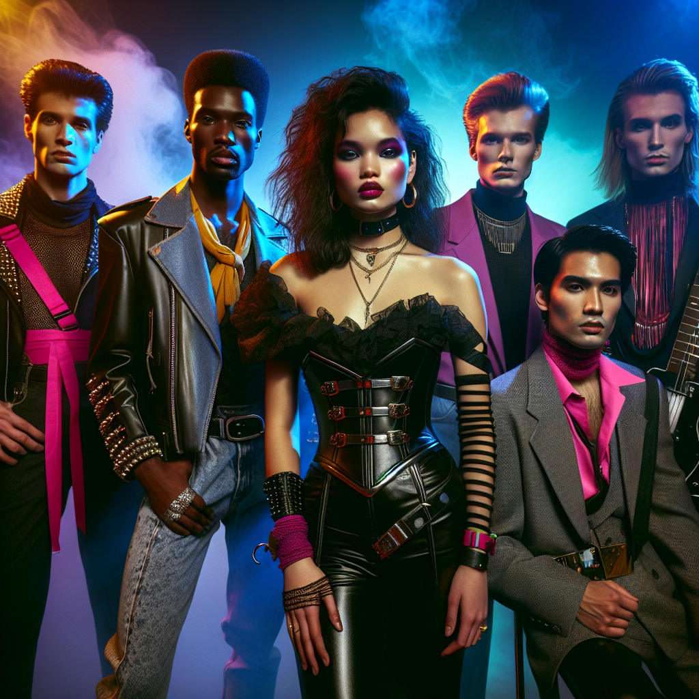

**The Luminescent Undertow: A Symphony of Ethereal Disarray**
In the cloaked mist of 1986, amidst the haunting echoes of the Faroese cliffs, emerged The Luminescent Undertow—a band like no other, weaving an alchemy of Dream Punk and Neo-Baroque Skronk. Their melodies danced like phosphorescent whispers over turbulent seas.
**Ragnar "The Oracle" Thorsson** - Lead Vocals and Harpsichord
Ragnar's voice, a spectral wail, guides listeners through mystical realms. His harpsichord adds a baroque flourish, casting enchantments rooted in both past and future. A seer through sound, Ragnar's charisma bewilders and binds.
**Ingrid "Echo" Larssen** - Synthesizer and Soundscapes
Crafting sonic tapestries with her ethereal synth, Ingrid conjures dreamscapes where reality blurs into phantasmagoria. Known for her introspective demeanor, she communicates in tones and textures, her notes a silent dialogue with the cosmos.
**Magnus "The Gale" Østergaard** - Lead Guitar
Magnus wields his guitar like a tempest—fierce yet disciplined. His riffs ripple with Neo-Baroque complexities, each strum a gust of raw, sublime energy. Beneath his stormy exterior lies a soul attuned to the world’s resonant beauty.
**Sigrid "Siren" Mikkelsen** - Bass Guitar
Sigrid's basslines pulse with a hypnotic undertow, anchoring the chaos above as though tethering clouds to the ocean floor. Her magnetic presence and surreal humor infuse live performances with unpredictable whimsy.
**Einar "Pulse" Hansen** - Drums and Percussion
Einar's rhythms are the heartbeat of this ethereal entity. His percussive artistry is both chaotic and precise, an embodiment of the dream-punk ethos. A silent philosopher, Einar's beats articulate the unspoken.
Together, The Luminescent Undertow beckons us to lose ourselves—a siren song from the edge of the known world.

Ragnar "The Oracle" Thorsson, Ingrid "Echo" Larssen, Magnus "The Gale" Østergaard, Sigrid "Siren" Mikkelsen, Einar "Pulse" Hansen
| Ragnar "The Oracle" Thorsson |
Lead Vocals and Harpsichord |
| Ragnar's voice, a spectral wail, guides listeners through mystical realms. |
| Ingrid "Echo" Larssen |
Synthesizer and Soundscapes |
| Ingrid conjures dreamscapes where reality blurs into phantasmagoria. |
| Magnus "The Gale" Østergaard |
Lead Guitar |
| Magnus wields his guitar like a tempest—fierce yet disciplined. |
| Sigrid "Siren" Mikkelsen |
Bass Guitar |
| Sigrid's basslines pulse with a hypnotic undertow, anchoring the chaos above. |
| Einar "Pulse" Hansen |
Drums and Percussion |
| Einar's rhythms are the heartbeat of this ethereal entity. |
|
Echoes of the Abyss (1986)
|
- Phosphorescent Reverie
- Baroque Whirlwind
- Skronk Serenade
- Ethereal Tide
- Dreamweaver's Lament
- Undertow's Embrace
- Fata Morgana Waltz
- Nocturnal Drift
- Shadows on the Cliffs
- Alchemical Rhapsody
- Mirage of the Echoing Fjord
- Luminescent Phantasia
- Elysian Gales
|
|
Chromatic Reverberations (1987)
|
- Kaleidoscope Haze
- Harmonium of the Deep
- Aurora’s Caress
- Celestial Discord
- Twilight Sonata
- The Skronk Ballet
- Nebula's Conundrum
- Refractions of Solitude
- Prismatica
- Sonata of the Drowned
- Echoes of the Enigma
- Luminous Labyrinth
- Siren's Fugue
|
|
Resplendent Dissonance (1988)
|
- Hues of the Abyss
- Opalescent Crescendo
- Baroque Tempest
- Reverberant Whispers
- The Dream Punk Waltz
- Astral Asymmetry
- Skronk Nocturne
- Chimeric Harmonies
- Ephemeral Elegy
- Fractured Euphony
- Shadows of the Aurora
- Resplendent Lullaby
- Harmonic Delirium
- Phantasmagoric Fugue
- The Undertow's Resurgence
|
Best viewed in Netscape Navigator 4.0
800x600 resolution
Made with Notepad